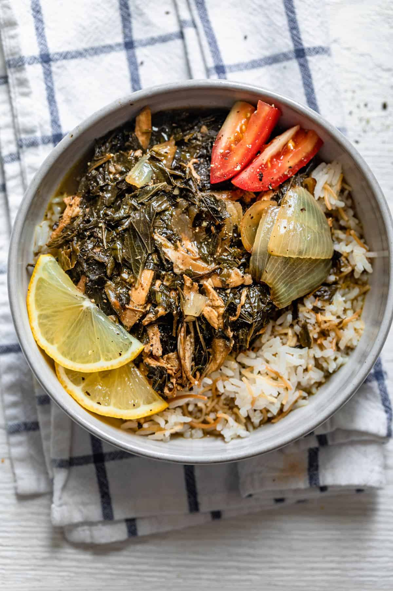

Molokhia

Molokhia is an iconic stew/soup Egyptian dish made from jute mallow leaves. Perfect for summer as it is packed with nutrients and very filling. Made with chicken broth, garlic, and coriander. You are sure to love this delicous and filling meal!
Ingredients
- Chicken breast or thighs
- Onion
- Bay leaves
- Cinnamon sticks
- Salt
- Water
- Dried molokhia
- Olive oil
- Cilantro
- Garlic cloves
- 7 Spice
- Dried coriander
- Black pepper
- Lemon Juiced and Slices
Steps
- Make the chicken broth by cooking chicken breast or thighs with onions, bay leaves, cinnamon sticks, and water.
- In the same pot cook cilantro and garlic with olive oil and add the washed molokhia with the spiced and sautee.
- Add the chicken broth on top of the molokhia and add roasted onions, shredded chicken, and lemon juice or lemon slices
- Serve and eat!